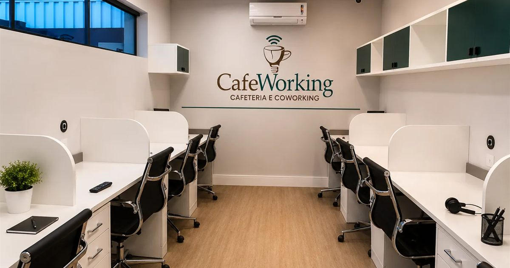
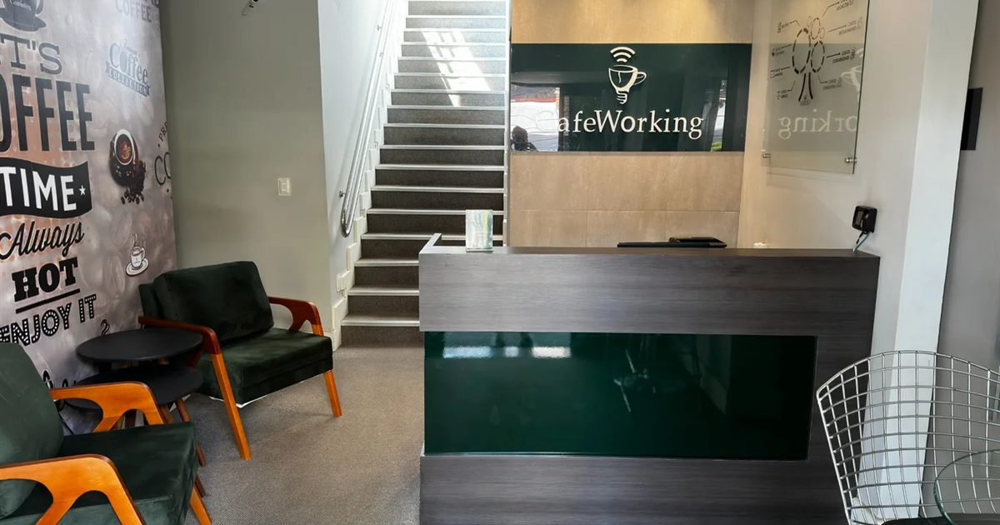
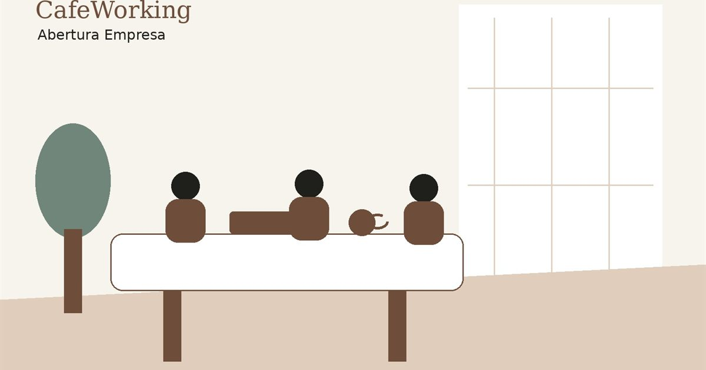
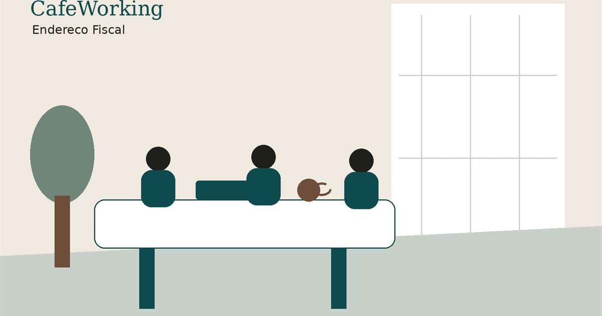
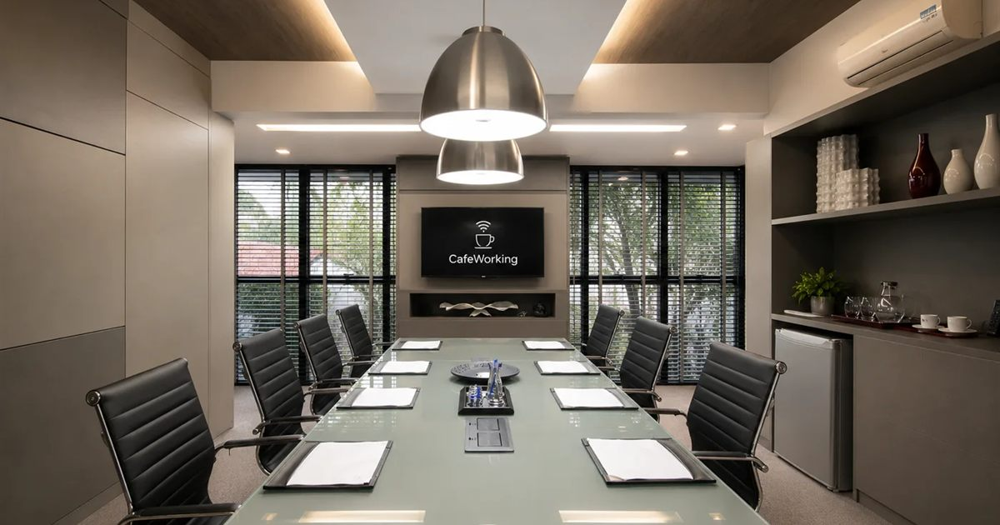
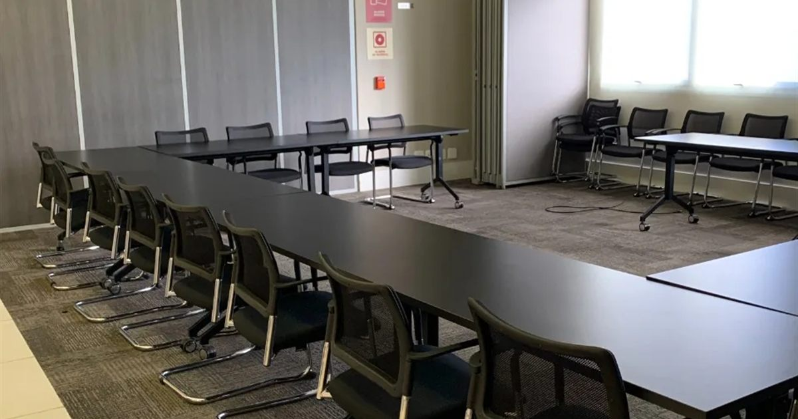
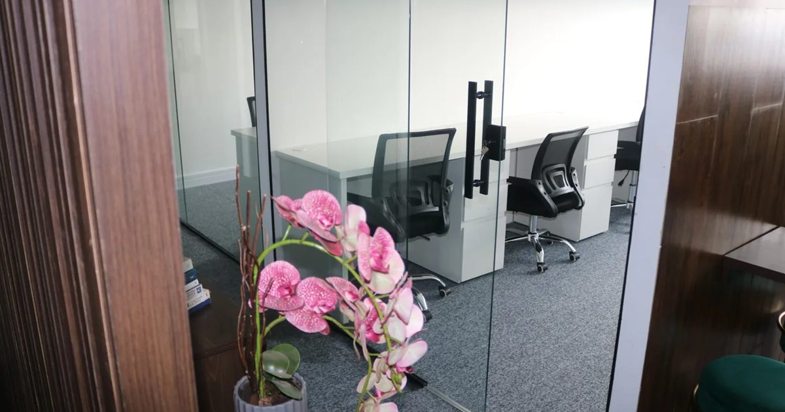

Quanto custa um coworking em Belo Horizonte?
Como o preço é formado, o que já está incluso na mensalidade, o que vira extra e a comparação honesta com alugar uma sala comercial na região.
Ler artigo principal →Conteúdos sobre coworking, endereço fiscal, abertura de empresa, contabilidade, jurídico, produtividade, networking e ambientes corporativos.

Como o preço é formado, o que já está incluso na mensalidade, o que vira extra e a comparação honesta com alugar uma sala comercial na região.
Ler artigo principal →Um blog pensado para atrair clientes pelo Google e, ao mesmo tempo, educar quem está conhecendo o CafeWorking.
Os formatos de contratação, o que está incluso na mensalidade, o que vira extra e a comparação real com alugar uma sala comercial.
Ler artigo →
Luxemburgo, Belvedere, Gutierrez, Savassi, Estoril e Buritis: o perfil de cada bairro e como escolher onde trabalhar e receber clientes.
Ler artigo →
Viabilidade do endereço, CNAE, contrato social, CNPJ, alvará municipal, prazos, custos e os erros que aparecem no primeiro ano.
Ler artigo →
Quando é permitido, o que trava o registro e as cinco consequências de deixar o endereço residencial exposto no CNPJ.
Ler artigo →
Qual tamanho escolher, o checklist técnico antes de reservar, como o preço é cobrado e o que fazer a reunião começar no horário.
Ler artigo →
Formato de sala, capacidade real, checklist técnico, coffee break e os custos que costumam aparecer depois da proposta.
Ler artigo →
Savassi, Lourdes, Belvedere, Luxemburgo, Estoril, Gutierrez e Centro comparados — e um método para escolher a região certa.
Ler artigo →Quando o ambiente certo reduz isolamento, melhora produtividade e ajuda sua empresa a transmitir mais profissionalismo.
Ler artigo →
Entenda como um endereço empresarial ajuda a abrir CNPJ, transmitir credibilidade e separar vida pessoal do negócio.
Ler artigo →Veja os cuidados básicos antes de abrir CNPJ: atividade, CNAE, regime tributário, endereço e contabilidade.
Ler artigo →Saiba o que observar antes de reservar uma sala para atendimento, apresentação, entrevista ou negociação.
Ler artigo →Compare as alternativas e entenda quando cada modelo faz sentido para sua rotina profissional.
Ler artigo →
Relacionamentos de negócio acontecem com mais naturalidade quando o ambiente estimula encontros e conversas.
Ler artigo →
Por que uma contabilidade estratégica ajuda o empresário a decidir melhor e reduzir riscos.
Ler artigo →
Como contratos bem feitos ajudam a prevenir conflitos, alinhar expectativas e proteger o negócio.
Ler artigo →